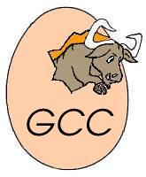

|

Welcome to the GCC home page!In April 1999, the egcs steering committee was appointed by the FSF as the official GNU maintainer for GCC. At that time GCC was renamed from the "GNU C Compiler" to the "GNU Compiler Collection" and received a new mission statement. Currently GCC contains front-ends for C, C++, Objective C, Chill, Fortran, and Java as well as libraries for these languages (libstdc++, libgcj,...). We want to work closely with developers to help and encourage them to contribute changes for inclusion in GCC. We thus provide access to our development sources with weekly snapshots and anonymous CVS. We will provide regular, high quality releases. We want those releases to work well on a variety of native (including GNU/Linux) and cross targets and use an extensive test suite as well as a benchmark suite to maintain and improve quality. GCC 2.95.2 is the current release and we are currently working on GCC 2.95.3, a maintainance update. GCC 2.96 and 2.97 are development snapshots leading towards GCC 3.0 which we hope to release by the end of Q1 2001. News/Announcements
Fortran news |